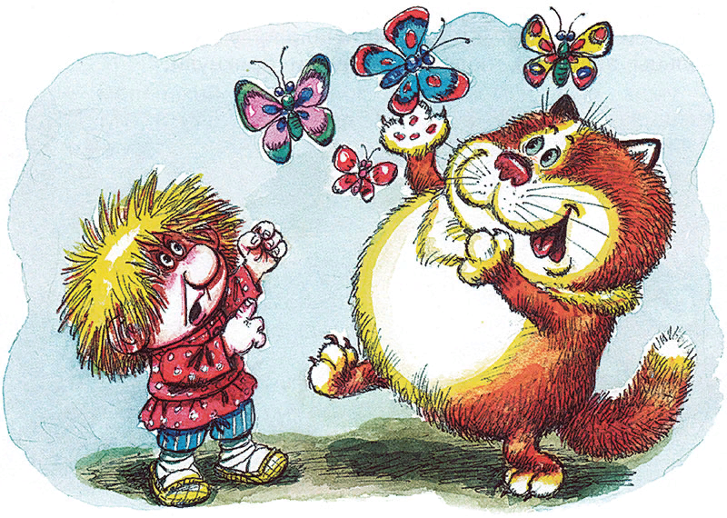
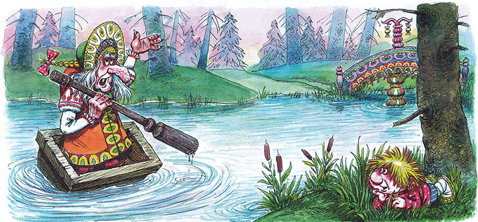
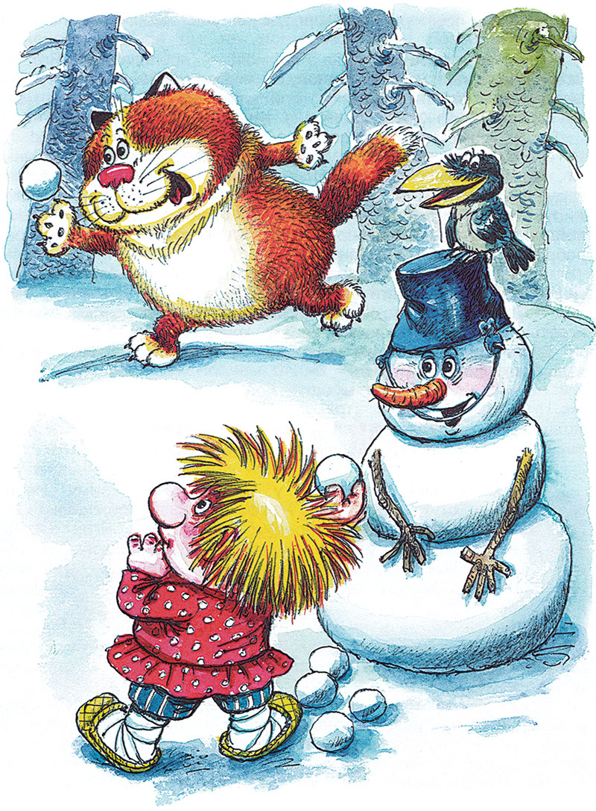
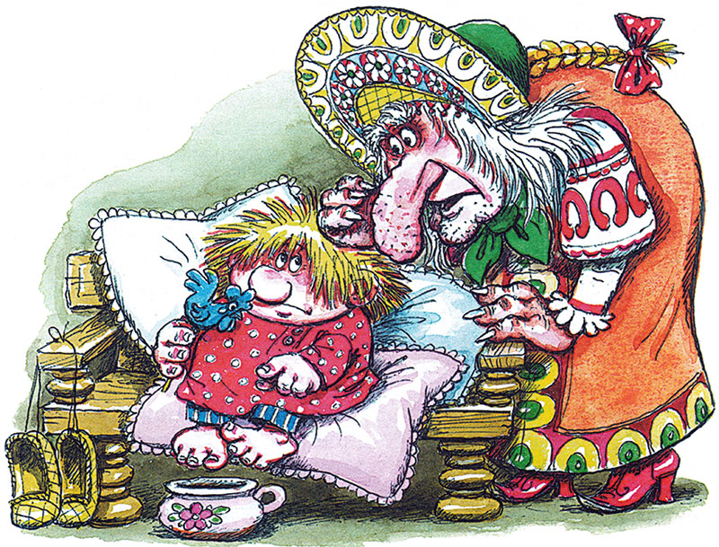

Домовёнок Кузя - продолжение -9.
Татьяна Александрова
21. Бездельный домовой
Маленький домовенок проснулся, протер глаза. Ни Бабы Яги, ни толстого Кота не видать. Зевнул, потянулся, вылез из-под одеяла, сел за стол завтракать.
Чугуны в печи булькают. Сковороды шипят. Огонь трещит. Возле печи топор прыгает, рубит дрова. Поленья — раз-раз! — одно за другим скачут в печь.
«Вот недотепы! — думает Кузька. — Ежели научились прыгать, упрыгали бы куда подальше подобру-поздорову. А то на тебе — прямиком в огонь. Лучшего места не нашли. Да что с них взять? Нет у них своей воли. Чурка, она чурка и есть». Наелся, вылез из-за стола, думает, чем бы заняться.
Тут что-то накинулось на домовенка, елозит по лицу. Он испугался, отмахивается, отпихивается. А это — полотенце. Утерло ему нос и улетело на вешалку. А по полу-то, по полу веник бегает, по углам похаживает, лавки обмахивает, сор выметает. А мусор-то, мусор — этакий прыткий, сам перед веником скачет. Потеха!
Допрыгали так до двери. Впереди мусор, за ним веник, следом Кузька скачет и хохочет. Дверь сама настежь. Сор-мусор улетел по ветру, веник на место убежал, Кузька остался на крыльце.
В лесу, наверное, уже зима. А на круглой поляне перед домом Бабы Яги бабье лето. Трава зеленеет. Цветочки цветут. Даже бабочки летают. В траве какой-то зверь резвится, за ними гоняется. Что за зверь такой? Не съест ли?
Кузька — в дом. Поглядывает в окно. Думал-думал, не помнит, сколько пирогов съел для подкрепления ума, и ведь догадался: толстый Кот резвится на поляне, кто же еще! Играть — так вместе! И бегом на поляну.
Кот носится как угорелый, на Кузьку никакого внимания. Поймает бабочку, крылышки оторвет — и за следующей. Выбирает, какая покрасивей.
— Или ты с ума спятил? — грозно закричал домовенок. — Тебе бы так пооторвать уши! Безобразник этакий!
Кот молча помыл лапкой лапку и скрылся в доме. Кузьке тошно было и глядеть на Кота. Ушел подальше от дома, к речке, побрел по желтому песочку. Волны крались за ним, слизывали следы. Вода в речке мутная, не поймешь, то ли глубоко, то ли воробью по колено. Ни птиц, ни зверей, никого. Хоть бы лягушка проскакала, укусил бы комар или муха. Осень, что ли, всех припрятала или всегда здесь эдак? Кузькину тень и ту будто смыла мутная вода. Солнышко светит сквозь какую-то мглу.
Желтый песочек кончился. За ним — осока, болотце, черный дремучий лес. Из лесу донесся тягучий вой. Ближе, еще ближе: песня разбойничья! Это Баба Яга плывет в свой Дом для хорошего настроения.

Кузька спрятался в траву. Что, если настроение у Яги не успеет исправиться? Но чем ближе песня, тем веселее. А когда из-за поворота, из лесной чащобы по речной излучине вылетело корыто, песня уже была хоть куда. Прибрежное эхо подхватило ее. Развеселые «Эх!» да «Ух!» заухали, загудели над круглой поляной. Корыто причалило у моста. Серебряные колокольцы звякнули, золоченые доски брякнули. Баба Яга прыгнула на берег. Дятел уже сидел на золоченых перилах.
— Ах ты, пташечка-стукашечка моя! — пропела Баба Яга. — Все-то он тукает, стукает, головушку мозолит! Все б ему тук-тук да стук-стук! Ах ты, молоточек мой алмазный, кияшечка ты моя!
Осмелевший Кузька вылез из травы:
— Бабушка Яга, здравствуй! А зачем Кот бабочек ловит?
— Ах ты, чадушко мое бриллиантовое! Все-то ему знатеньки надобно, такой разумник! Крылышки оторвет — подушечку набьет, а скучно станет — скушает Это котик с жиру бесится, деточка, — ласково объяснила Баба Яга. — Ну, пойдем чай пить. Самоварчик у нас новехонький, ложечки серебряные, прянички сахарные.
— Иди, бабушка Яга, пей! Ты с дороги, — вежливо ответил Кузька, в дом идти ему не хотелось.
— Дятел! — позвал он, когда Яга ушла в дом. — Давай играть в прятки, в салочки, во что хочешь.
Дятел глянул свысока и продолжал долбить дерево. Кузька вздохнул, пошел пить чай.
22. Зимой у Бабы-Яги
Жил маленький домовенок у Бабы Яги всю зиму. Непогода, вихри, стужа, сам Дед Мороз стороной обходили круглую поляну. Не хотели, наверно, связываться с Ягой. Кузька все ждал: вот-вот загудит в трубе злая тетка Вьюга, свирепый дядька Буран распахнет дверь, швырнет в избу пригоршню снега, Дед Мороз застучит, заскребется в избу ледяными пальцами.
Но Вьюга ни разу не свистнула в трубу. Буран не подлетел к крыльцу. Метель с дочкой Метелицей гуляли на других полянах. Дед Мороз не дышал на окна, они так и остались прозрачными.
Кузька смотрел, как летит белый снег, покрывает, будто периной, зеленую траву, розовые букеты и бутоны на ковре. Когда Яги не было дома или она спала на печи, выскакивал на поляну, ловил снежинки, любовался самыми прекрасными, лепил снежки и кидал ими в толстого Кота. Но не попал ни разу.

Кот лениво протягивал лапу и на лету ловко хватал снежок, будто белую мышку. Кузька даже бабу вылепил, совсем не похожую на Бабу Ягу. У крыльца сделал горку, катался сколько хотел и сосал разноцветные сосульки, слаще которых ничего не могло быть.
Чуть Яга увидит Кузьку за окном, сразу закричит:
— Ах, дитятко озябнет, замерзнет, простудится, ознобит ручки-ножки, щечки-ушки, отморозит носик! — и тащит его в дом, отогревает на печи, отпаивает горяченьким.
Поначалу Кузька удирал, спорил:
— Что ты, бабушка Яга! Это ты — не молоденькая, тебе и прохладно. А мне в самый раз!
Но зима долгая. Кузька понемножку научился бояться даже слабого ветерка, легкого морозца. Сидел на теплой печи или за столом, за расписной скатертью. А Баба Яга готовила ему яства одно другого слаще.

Вот только скука, делать Кузьке нечего. Зимой в избах полно народу. А в закутках и под печкой видимо-невидимо домовых. Дети играют с ягнятами и поросятами, спрятанными в избу от мороза, а домовята — с мышами. Женщины поют за прялками, хлопочут у печей. Старики на печи сказки рассказывают. Вот бы всех сюда, в пряничный дом! Вот бы все обрадовались! И делать-то тут никому ничего не надо, все готовенькое.
Да вот то-то и оно, что не надо. Бездельный домовой — разве домовой? Но Баба Яга объяснила, что ежели печка печет, варит, парит и жарит, то кому-то кушать все это надобно, чтобы добру не пропадать, печь не обижать, и, значит, дел у Кузьки по горло. Вот он и занялся делом — ел до отвала.
Очень скучал домовенок по друзьям, по Афоньше, Адоньке, Сюру, Вуколочке… Хоть бы во сне чаще снились, что ли. Но Яга, что ни день, а особенно длинными зимними вечерами, шептала-нашептывала, плела сплетни, будто черную паутину. Плохие, мол, у Кузеньки дружки, позабыли его, позабросили. Искать его не ищут, спрашивать о нем не спрашивают, никому-то он не нужен: как счастье, то вместе, а как беда — врозь.
Ругала она и новых Кузькиных друзей, леших. Спят в берлоге, как собаки на сене. Кузенькино сокровище присвоили. Зимой волшебный сундук им вовсе ни к чему, а отдать не отдали, себе припрятали чужое добро.
Кузька слушал, слушал да от нечего делать и поверил. И как не поверить? Он ведь всего-навсего маленький глупый домовенок, шесть веков ему, седьмой пошел. А Бабе Яге столько веков, что и сама не помнит, со счету сбилась. И все годы злом жила, неправдой. И умна, да неразумна. Все б ей хитрить, обманывать. А неправдой далеко уйдешь, да назад не воротишься и друзей потеряешь.
Сидит Кузька за полным столом. Бабу Ягу слушает, себя жалеет, друзей поругивает.
Продолжение следует